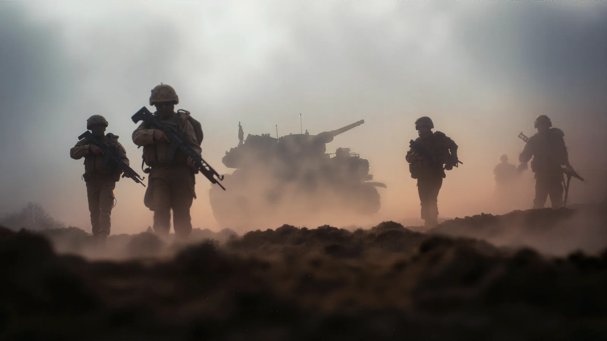
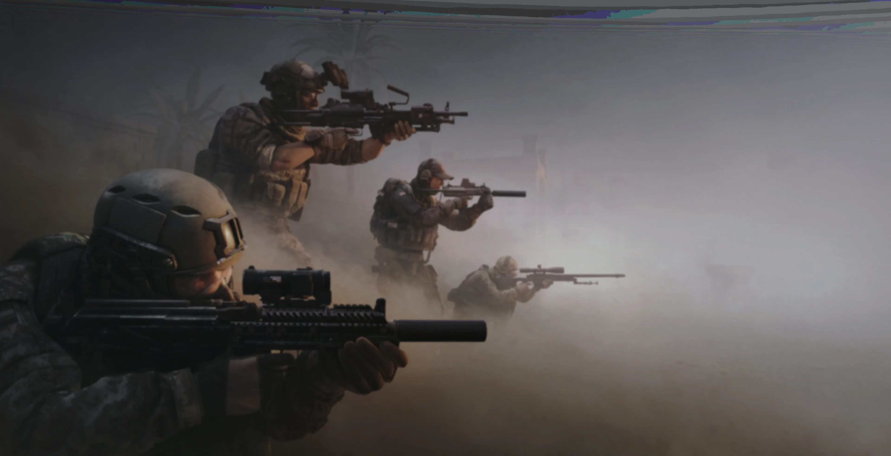
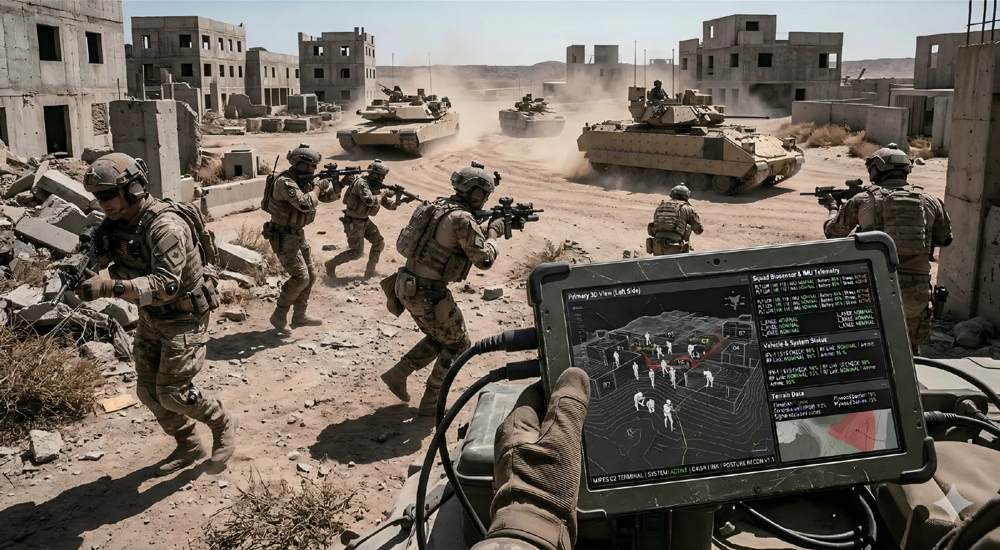
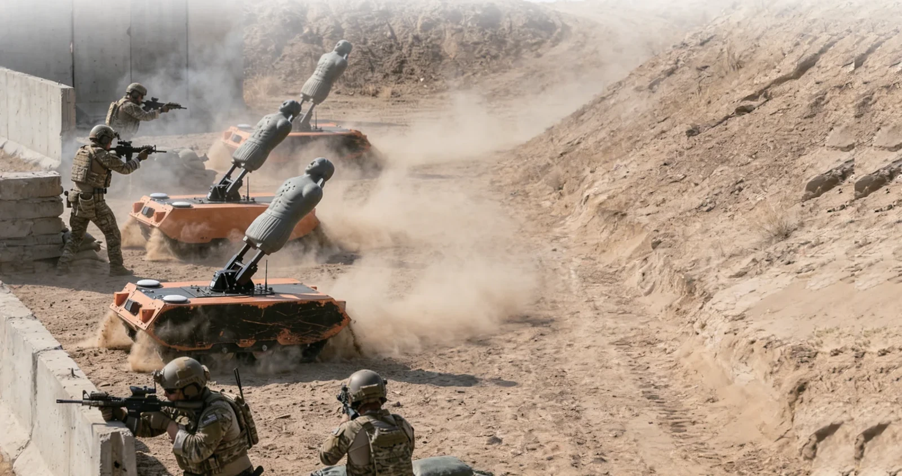
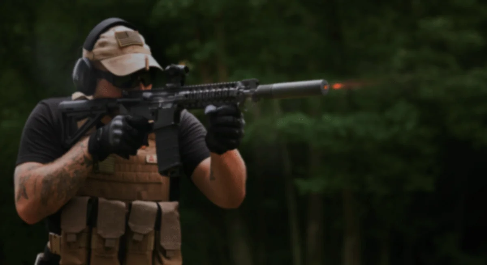
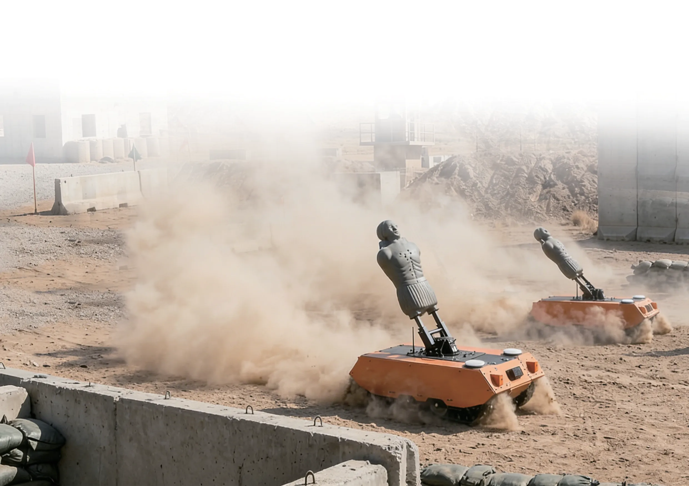
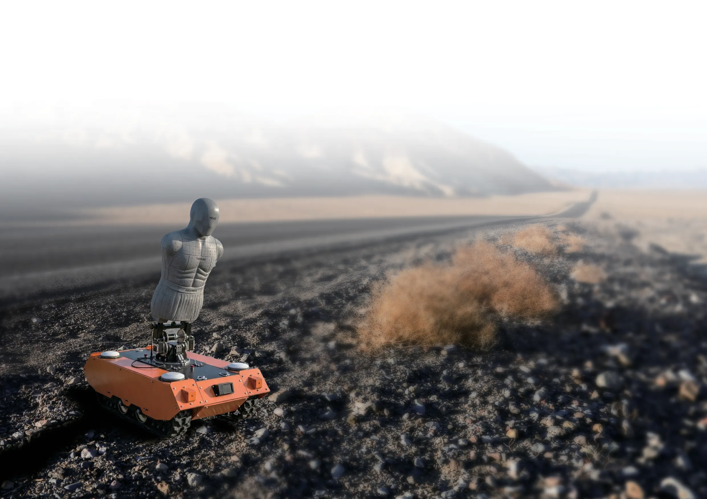
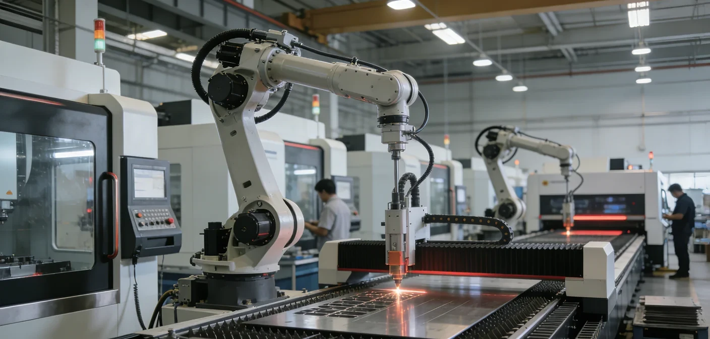

Train together at scale
Support exercises involving thousands of participants in a shared training environment.
Tactical training and exercise review
MIPES brings participants, equipment, engagement activity, and exercise review into one connected training environment built to scale.

MIPES is a modular tactical training system that brings simulated engagements, participant movement, and exercise oversight into one connected picture.
Designed for everything from focused team drills to exercises with thousands of simultaneous participants, it helps instructors understand how the action unfolded and turn it into more useful feedback.
Support exercises involving thousands of participants in a shared training environment.
Bring engagement outcomes together with posture and movement context.
Combine dismounted systems, vehicle platforms, simulated effects, robotic targets, and supporting equipment.
Use exercise data and replay to guide focused after-action discussions.
MIPES brings the people, equipment, and scenario into one training environment. Instructors can follow the exercise as it happens, then return to the recorded sequence to understand decisions and outcomes.
Set the training objective, assign teams and roles, and select the scenario and equipment needed for the session.
Starts with a defined objective and exercise plan.
Bring participant equipment, selected vehicle platforms, robotic targets, and scenario effects into a shared exercise view.
Creates one connected training environment.
As the scenario unfolds, instructors follow participant movement, simulated engagements, and platform activity from the exercise-control view.
Shows the activity behind each outcome.
Use the event sequence and 3D replay to discuss how teams moved, responded, and engaged, then focus feedback for the next exercise.
Turns into evidence-led after-action feedback.

Distinct capabilities work together to support a more complete training experience. The right configuration depends on your objectives and environment.
Explore the full product range

Bring simulated engagements, posture and movement context, exercise control, and 3D after-action review into one training environment.

Tracked targets follow planned routes, adjust posture with movement speed, and react to adjudicated hits.

Laser boresighters, dry-fire tools, weapon lights, and audio-driven targets support preparation and practice.
Product spotlight
Explore the equipment behind a connected exercise—from mobile opposition to tools that support preparation and focused practice.

Tracked mobility, in-place turning, planned routes, and obstacle avoidance keep the opposition dynamic.
Explore ARTS ↗
Target posture changes with movement speed, while hit logic triggers distinct responses for training review.
See target behaviour ↗Explore laser boresighters, dry-fire devices, weapon lights, and responsive audio targets.
Browse accessories ↗An engagement result tells instructors what happened. MIPES is designed to add context around how participants moved and positioned themselves during an exercise, giving instructors a fuller basis for feedback and review.
Explore the training approach
MIPES brings together equipment, exercise oversight, and review in a modular approach. We work from the training objective to identify a suitable configuration for each programme.
Tell us what you are preparing for, who will train, and what you want instructors to learn. A private briefing can explore the right MIPES configuration in more detail.